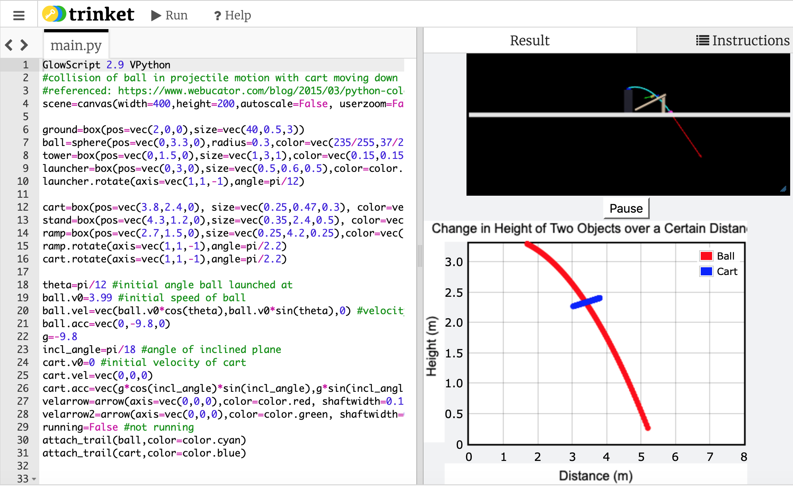
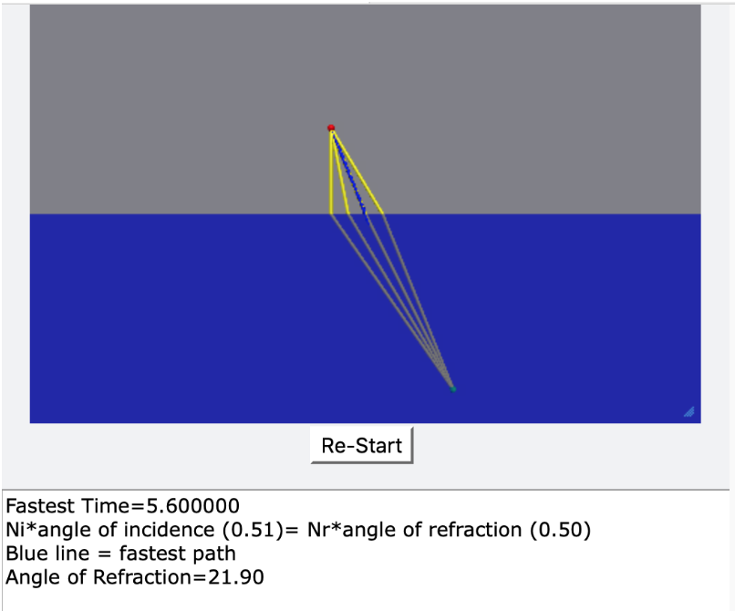

This model shows two objects in motion that eventually collide with each other; one is in projectile motion while the other is moving down an inclined plane. The link embedded in the title of this project will bring you to the model, where you can interact with it. If you press down on the button underneath the screen, the two objects will start moving. Their motion and collision are graphed below.
Project 2: Snell's Law
This model demonstrates Snell's Law. When you press the button, light will enter from a source and when it reaches the surface of the water, it will refract and travel in a new direction. You can pause the model any time you wish by pressing the button again. The model runs through several trials, having the position at which the light hits the surface of the water change, in order to find the fastest path for the light to travel, which should prove Snell's Law.
